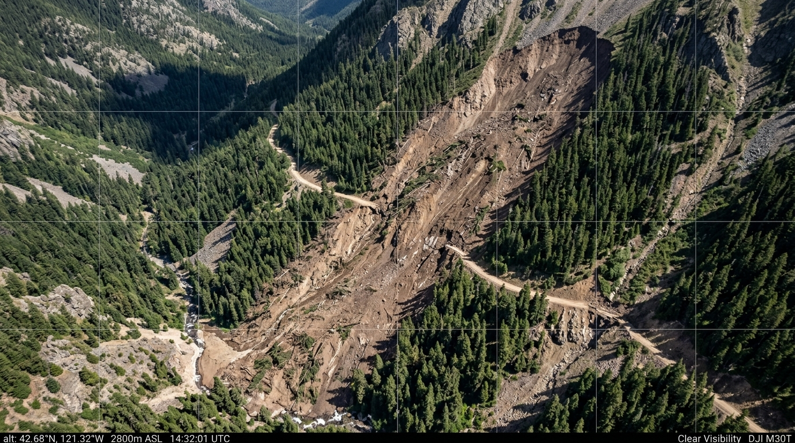

PRITHVI-SHIELD DEFENSE PIPELINE •
DEEPFAKEIMAGE NEURAL VERIFICATION ENGINE
psychology_alt Citizen Photo DeepFake Intelligence & Authenticity Manager
Analyzing citizen mobile hazard photographs via custom trained DeepFake ResNet-18 neural classifier to prevent false disaster alarms.
image_search Photo Ingestion Viewport
INC-S04-9812.JPG
autorenew
DeepFake ResNet-18 Tensor Evaluation in progress...
verified
DeepFake Neural Verdict
VERIFIED AUTHENTIC
99.4%
Real Probability
Real Field Photo Probability:
99.4%
Synthetic / AI Deepfake Probability:
0.6%
check_circle
RESCUE DISPATCH PERMITTED
Image verified as authentic citizen field capture. Approved for automated damage assessment, survivor detection, and rescue dispatch.
fingerprint Model Telemetry & Artifact Markers
Model Architecture
ResNet-18 Deep Neural
deepfakeimage weights
Noise Pattern
AUTHENTIC CMOS
Bayer CFA Intact
Edge Continuity
NATURAL TEXTURE
No Latent Blur
Dispatch Gate
APPROVED
Ground Truth Verified
Citizen App Telemetry
Source: Citizen App (SIH 2026)
Device: Android Camera API
Geotag: 27.3389°N, 88.6065°E
Timestamp: 2026-09-04 22:30 IST